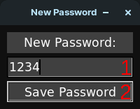
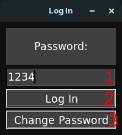
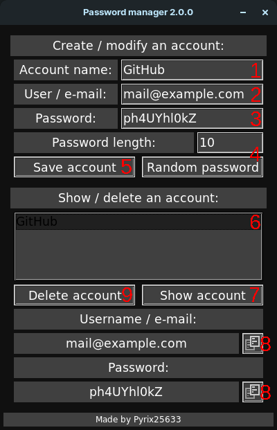

-The first time you will have to set the password to access Password manager:

1)Insert the password you want to use to acces Password manager (you can always change it)
2)Press Save Password to proceed
-All the other times you will have to insert your password to access Password manager:

1)Insert the password
2)Press Log In to open Password manager
3)Or press Change Password if you want to change the password
-Then you will be able to manage your passwords with Password manager

1)Insert the accout name here (e.g."GitHub")
2)Insert the username/e-mail here (e.g."mail@example.com" or "ExampleUser")
3)You can insert you password here or 4)Insert a password lenght and generate a random one
5)Press Save Account to save the account (To modify an existing account you can re-create it
without the need to delete it)
6)Navigate thrugh the list (use the arrows for better accuracy, you will not see all them just
scrolling it) and select the one you need
7)Press Show Account to see the username/e-mail and password of that account and 8)Press the copy
buttons to copy the username/e-mail or password to clipboard and then paste them where you need
9)Or press Delete Account to delete the account